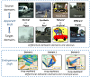

Exploring Endogenous Shift for Cross-domain Detection: A Large-scale Benchmark and Perturbation Suppression Network
Renshuai Tao, Hainan Li, Tianbo Wang, Yanlu Wei, Yifu Ding, Bowei Jin, Hongping Zhi, Xianglong Liu*, Aishan Liu
IEEE CVPR, 2022
@inproceedings{Tao:CVPR22,
author = {Renshuai Tao and Hainan Li and Tianbo Wang and Yanlu Wei and Yifu Ding and Bowei Jin and, Hongping Zhi and Xianglong Liu and Aishan Liu},
title = {Exploring Endogenous Shift for Cross-domain Detection: A Large-scale Benchmark and Perturbation Suppression Network},
booktitle = {IEEE CVPR},
year = {2022},
}
Over-sampling De-occlusion Attention Network for Prohibited Items Detection in Noisy X-ray Images
Renshuai Tao, Yanlu Wei, Hainan Li, Aishan Liu, Yifu Ding, Haotong Qin, Xianglong Liu
ArXiv, 2022
Towards Real-world X-ray Security Inspection: A High-quality Benchmark and Lateral Inhibition Module for Prohibited Items Detection
Renshuai Tao, Yanlu Wei, Xiangjian Jiang, Hainan Li, Haotong Qin, Jiakai Wang, Yuqing Ma, Libo Zhang, Xianglong Liu*
IEEE ICCV, 2021
@inproceedings{Tao:ICCV21,
author = {Renshuai Tao and Yanlu Wei and Xiangjian Jiang and Hainan Li and Haotong Qin and Jiakai Wang and Yuqing Ma and Libo Zhang and Xianglong Liu},
title = {Towards Real-world X-ray Security Inspection: A High-quality Benchmark and Lateral Inhibition Module for Prohibited Items Detection},
booktitle = {IEEE ICCV},
year = {2021},
}
Towards Real-World Prohibited Item Detection: A Large-Scale X-Ray Benchmark
Boying Wang, Libo Zhang, Longyin Wen, Xianglong Liu, Yanjun Wu
IEEE ICCV, 2021
Occluded Prohibited Items Detection: An X-ray Security Inspection Benchmark and De-occlusion Attention Module
Yanlu Wei, Renshuai Tao, Zhangjie Wu, Yuqing Ma, Libo Zhang, Xianglong Liu*
ACM Multimedia, 2020
@inproceedings{Wei:MM20,
author = {Yanlu Wei and Renshuai Tao and Zhangjie Wu and Yuqing Ma and Libo Zhang and Xianglong Liu.},
title = {Occluded Prohibited Items Detection: An X-ray Security Inspection Benchmark and De-occlusion Attention Module},
booktitle = {ACM Multimedia},
year = {2020},
}
Revisiting Open World Object Detection
Xiaowei Zhao, Xianglong Liu, Yifan Shen, Yixuan Qiao, Yuqing Ma, Duorui Wang
Arxiv, 2022
Temporal Speciation Network for Few-Shot Object Detection
Xiaowei Zhao, Xianglong Liu, Yuqing Ma, Shihao Bai, Yifan Shen, Zeyu Hao, Aishan Liu
Arxiv, 2022
Adversarial Fine-Grained Composition Learning for Unseen Attribute-Object Recognition
Kun Wei, Muli Yang, Hao Wang, Cheng Deng*, Xianglong Liu*
IEEE ICCV, 2019